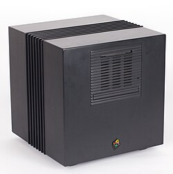
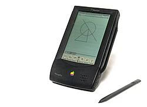

Apple 50 | Cukros Víz
Egész életedben cukros vizet akarsz árulni, vagy inkább velem jössz, és megváltoztatod a világot?
Ez az idézet Steve Jobs-tól származik, John Sculley, a PepsiCo volt elnöke felé. Jobs Sculley-t akarta kinevezni az Apple új vezérigazgatójaként ezzel lecserélve Mike Markkulát. 1983-ban, John Sculley lett az Apple új vezérigazgatója. Sculley első nagy részvétele egy termék megjelenésében a Macintosh volt, ami csak a kinevezése után 1 évvel később jelent meg.
Viszont, a leplek alatt nem volt annyira rózsás a helyzet az Apple-nél. Jobs mindig főnökösködött, és parancsolgatott mindenkinek, legyen az alatta vagy felette. Ez mellett, a Macintosh, Jobs nagy álomprojektje egy nagy bukás volt.
1985-ben, Jobs megpróbálta eltávolítani Sculley-t a vezérigazgatói pozíciójából, viszont sikertelenül. És, ez volt az utolsó csepp Sculley-nak. Miután megtudta, egyből összehívta az Apple Igazgatótanácsát, hogy szavazzanak Jobs és Sculley esetéről. A végén, a tanács Sculley mellett döntött, és megfosztották Jobsot minden erejétől a cégnél. Még a Macintosh csapatból is kirúgták.
Jobs még 1985-ben elhagyta az Apple-t.
Jobs távozása utáni első pár év nehéz volt az Apple-nek. Persze, Jobsnak is nehéz volt, viszont neki ott volt a hatalmas önbizalma, és erős egója. Igaz, Sculley alatt kiadtak sok nagyon fontos terméket, például a Macintosh Plus-t, amit sokan „macOS Platform megmentőjeként” hívnak. Az eredeti Macintosh sok hibáját kijavította, és egy barátságossabb árért is indult.
Jobs viszont teljesen arra volt ösztönözve, hogy megmutassa az Apple-nek, hogy mennyire rossz döntés volt őt rávenni a felmondásra. Ezért, 1985 szeptemberében megalapította a NeXT Inc.-et.
Egy kép a NeXT Logójáról. Készítette: Paul Rand Licensz: Fair use, oktatási célokra felhasznált kép.
Jobs a NeXT-et egy Apple versenytársnak szánta, egy felhívásnak, hogy „Nem kelletek nekem, én képes vagyok megint megcsinálni!”
A NeXT első terméke a NeXT Computer volt, vagy más néven a The Cube (A Kocka).

Egy kép a NeXT Computer-ről. Kép: All About Apple Museum / Wikimedia Commons. Licensz: CC BY-SA 3.0
A NeXT Computer pénzügyileg bukás volt, viszont technológiailag forradalmi. Az operációs rendszere, a NeXTSTEP az egyik első olyan operációs rendszer volt, amely:
- Objektumorientált programozásra alapult.
- Nagy részben az Objective-C programozási nyelven épült.
- UNIX-alapú volt, és egy modern, grafikus felhasználói felülettel rendelkező operációs rendszerként új szintre emelte a UNIX használhatóságát.
- Felhasználóbarát és könnyen kezelhető volt a felhasználói felülete.
- Tim Berners-Lee egy NeXT Computeren készítette el az első webböngészőt, és az első webszervert.
Az Apple, ezt látva érezte, hogy a NeXT valami ténylegesen forradalmit készített, szóval 1997-ben felvásárolta a NeXT-et $427 Millióért. Ezzel nem csak a NeXTSTEP-et kapták meg, hanem Steve Jobsot is. Amíg nem volt Jobs a cégnél, az Apple sok, Jobs szerint hülyeséget adott ki, például a Apple Newton MessagePad, ami egy nagyon megosztott kritikai véleményekkel rendelkező termék volt a borzalmas marketing és még rosszabb szoftvere miatt.
